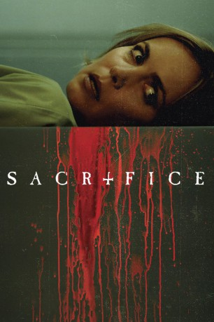
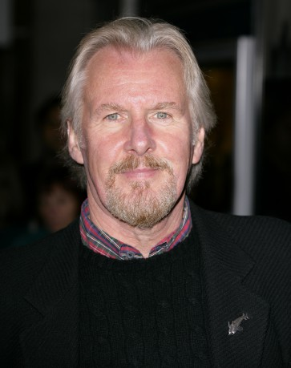
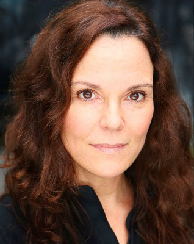

#6149 Sacrifice - Todesopfer
 
 IMDB-Wertung: 5.3 / 10
IMDB-Wertung: 5.3 / 10  Metascore: 0
Metascore: 0 
Eine ermordete Mutter... ein vermisstes Baby... ein altes Ritual. Gerade erst ist Ärztin Tora Hamilton (Radha Mitchell) mit ihrem Mann Duncan (Rupert Graves) auf die entlegenen Shetlandinseln gezogen, als sie im Garten ihres Grundstücks eine grausame Entdeckung macht: Sie ist fassungslos, als sie tief im Torfboden die Leiche einer jungen Frau findet. Die Haut ist mit mysteriösen Symbolen übersät und in der Brust klafft ein Loch, weil ihr brutal das Herz entfernt wurde. Als Tora Nachforschungen anstellt, stößt sie auf einen uralten Kult, der auf unheimliche Weise mit der Geschichte der Inseln verwoben ist und wohl noch immer sein Unwesen treibt...
Jahr: 2016
Dauer: 87 Minuten
FSK: 12
Land: Irland Studio: EuroVideoTonspuren: DTS - ,
Untertitel: Deutsch,
Auflösung: 1080p (1920x800) Größe: 5621 MB
Genre: Thriller, Horror, Fantasy, Mystery
Regisseur: Peter A. Dowling
Drehbuch: Michael Kane
Soundtrack:
Darsteller:
- Radha Mitchell als Dr. Tora Hamilton
 Rupert Graves als Duncan Guthrie
Rupert Graves als Duncan Guthrie Ian McElhinney als D.I. McKie
Ian McElhinney als D.I. McKie-  David Robb als Richard Guthrie
- Hilary Rose als Janice Shaw
- Joanne Crawford als Sgt. Dana Tulloch
- Megan Riordan als Janet
- Peter Vollebregt als Kenn Wickliff
-  Lesa Thurman als NY Hospital Nurse
- Aron Hegarty als Officer
- Rachel Oliva als Ruth Morgan
- Bernadette Brown als Caroline Salter
- Liam Carney als Mr. Grey
- Declan Conlon als Stephen Gair
- Conor Mullen als Stephen Renney
- Deirdre Monaghan als Elspeth Guthrie
- Clare Barrett als Nurse
- Melissa Maria Carton als Suzie
Datei: X:\2016(N-Z)\Sacrifice - Todesopfer (2016, FSK12, 1920x800).mkv seit 09.05.2017
Festplatte: HD 2016(A-Z)
 Es gibt insgesamt 182 Filme in der Gruppe '2016(N-Z)'
Es gibt insgesamt 182 Filme in der Gruppe '2016(N-Z)'